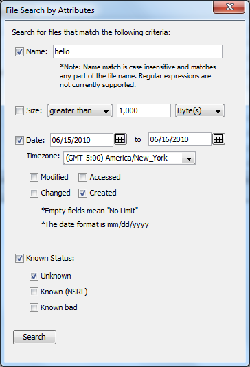

Currently, there are 3 categories that you can use to filter and show the directories and files within the images in the current opened case.
The categories are:
1. Name
Search for all files and directory whose name contains the pattern given.
Note: it doesn't support regular expression and keyword matching.
2. Size
Search for all files and directory whose size matches the pattern given. The pattern can be "equal to", "greater than", and "less than". The unit for the size can be "Byte(s)", "KB", "MB", "GB", and "TB".
3. Date
Search for all files and directory whose "date property" is within the date range given. The "date properties" are "Modified Date", "Accessed Date", "Changed Date", and "Created Date". You must also specify the timezone for the date given.
To use any of these filters, check the box next to the category and click "Search" button to start the search process. The result will show up in the "Result Viewer".
Here's an example where I try to get all the directories and files whose name contains "hello", has a size greater than 1000 Bytes, and was created between 06/15/2010 and 06/16/2010 (in GMT-5 timezone):
